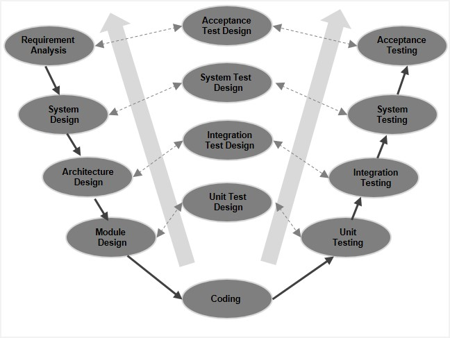
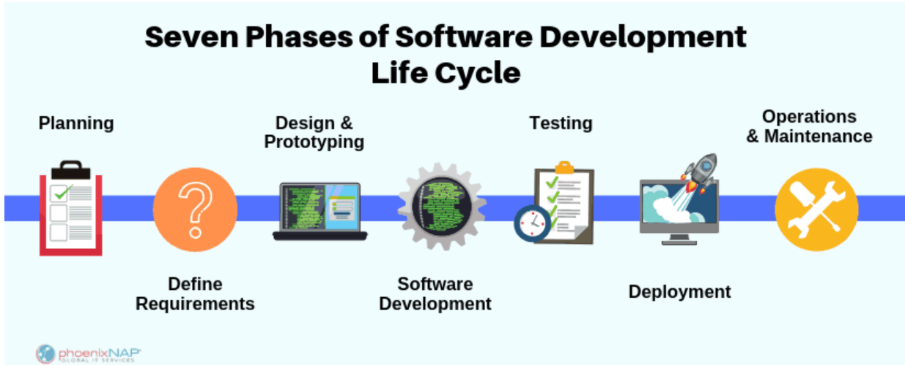
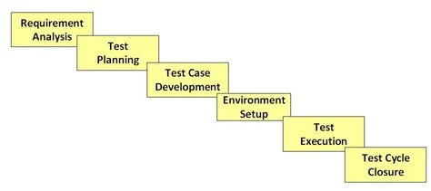

About me
Learn Manual Testing
Practical exercises
MANUAL TESTING COURSE
From beginner to advanced
Preliminary concepts
What is Software Testing?
Software Testing is a method to check whether the
actual software product matches expected requirements (which are commonly given by the client or
product owner to project managers) and to ensure that software product is Defect free. It involves execution of
software/system components using manual or automated tools to evaluate one
or more properties of interest. The purpose of software testing is to identify errors,
gaps or missing requirements in contrast to actual requirements.
Software Testing is important because if there are any bugs or errors in the software, it can be
identified early and can be solved before delivery of the software product.
Properly tested software product ensures reliability, security and high performance
which further results in time saving, cost effectiveness and customer satisfaction.
What is more, software bugs could be expensive or even dangerous. Software bugs can potentially
cause monetary and human loss. Let's see these few examples:
- Starbucks was forced to close about 60 percent of stores in the U.S and Canada due to software
failure in its POS system. At one point, the store served coffee for free as they were unable to
process the transaction.
- In 2015 fighter plane F-35 fell victim to a software bug, making it unable to detect targets
correctly.
- In May of 1996, a software bug caused the bank accounts of 823 customers of a major U.S.
bank to be credited with 920 million US dollars.
What are the benefits of Software Testing?
Here are some important benefits:
- Cost-Effective: It is one of the important advantages of software testing. Testing any IT project
on time helps you to save your money for the long term. In case if the bugs caught in the earlier
stage of software testing, it costs less to fix.
- Security: It is the most vulnerable and sensitive benefit of software testing. People are looking
for trusted products. It helps in removing risks and problems earlier.
- Product quality: It is an essential requirement of any software product. Testing ensures a quality
product is delivered to customers.
- Customer Satisfaction: The main aim of any product is to give satisfaction to their customers. UI/UX
Testing ensures the best user experience.
What's the difference between Quality Assurance (QA), Quality Control (QC), and testing?
QA is the process of planification and definition about the ways of monitoring and implementing testing
inside a particular team or organization, in order to guarantee the product or project's quality. This method
defines and establishes quality standards for the projects.
QC is the process of finding defects and giving suggestions to improve the software quality. The methods
QC resorts to are generally established to guarantee quality through testing.
Finally, testing is the process of validating if the software created by the developers' team matches the
requirements and standars established by the organization.
What are "requirements"?
Testers' obligation is to analyse requirements. These are the technological needs an organisation has.
In other words, these are the conditions the system has to comply in order to satisfy the clients' needs.
These requirements are key for testers to define test cases.
Test cases are the conditions or variables under which a tester determines if a piece of testing (application,
program, website, banner, etc) or a function in the piece (clicktags, transitions, animation, etc.) is
satisfactory. Let's put it simpler, test cases are the guides or standards used to determine if a piece of testing
works correctly (as expected) or not.
Now that we have an idea about some preliminary notions about testing, let's start making the disctinction
between the two main types of software testing:
- Manual Testing: it is a type of software testing in which test cases are executed manually
by a tester without using any automated tools. The purpose of Manual Testing is to identify
the bugs, issues, and defects in the software application. Manual software testing is the most
primitive technique of all testing types and it helps to find critical bugs in the software
application.
Any new application must be manually tested before its testing can be automated.
Manual Software Testing requires more effort but is necessary to check automation feasibility.
Manual Testing concepts does not require knowledge of any testing tool. One of the Software
Testing Fundamental is “100% Automation is not possible“. This makes Manual Testing imperative.
Some of the types of testing which are commonly manually executed are related to the user interface, since
it is necessary to count on an expert eye to detect bugs in the system's layout. It can also be necessary
in exploratory testing, in which case the tester does not follow test cases as a guide to execute the tests,
but this kind of testing allows you to think outside the box and come up with use cases that might
not be covered in a test case.
- Automation Testing: Automation testing is the process of testing software and other tech products
to ensure it meets strict requirements. Essentially, it's a test to double-check that the
equipment or software does exactly what it was designed to do.
It is required when you want to run the same test cases across multiple machines at the same time.
Automation testing is also a good way to avoid human error in your testing. With automation, you
can be sure that all tests are exactly the same. For example: load tests, database testing, performance tests,
among others.
Both kinds of testing are indispensable to guarantee a piece's quality. It is not that a tester can choose
between one or the other. There will always be the need of both types of testing. Moreover, ever if automation
can help you make testing more efficient and effective, not all software testing can be automated, and
sometimes manual testing will be more appropriate in some instances.
However, let's focus on "Manual testing" first. I will share with you all my knowledge about the topic and Some
practical examples of my experience as a Manual QA Analyst. I hope this can help you as a guide if you
are interested in becoming a manual QA Analyst. If your intention is just to enrich yourself with extra knowledge
just because you found this text catching, I hope you also enjoy it.
Manual testing
SECTION 1: MODELS OF SDLC
SDLC, or Software Development Life Cycle, is a set of steps used to create software applications. These
steps divide the development process into tasks that can then be assigned, completed, and measured. This structure
is followed by a development teamwithin the software organization. It aims to produce quality software that
exceeds costumer expectations, meets deadlines and costs estimates.
There are different models in which this process can be applied, but the three most widely used are:
- Waterfall Model: It is also referred to as a linear-sequential life cycle model. In this model, each
phase must be completed before the next phase can begin and there is no overlapping in the phases.
This Model illustrates the software development process in a linear sequential flow. This means that
any phase in the development process begins only if the previous phase is complete.
The sequential phases in the Waterfall model are: Requirements, System design, Implementation,
Integration and Testing, Deployment, Maintenance.

- V-model: The V-model is an SDLC model where execution of processes happens in a sequential manner in
a V-shape. It is also known as Verification and Validation model. The V-Model is an extension of the
waterfall model and is based on the association of a testing phase for each corresponding development
stage. This means that for every single phase in the development cycle, there is a directly associated
testing phase. This is a highly-disciplined model and the next phase starts only after completion of
the previous phase.

- Agile model: Agile SDLC model is a combination of iterative and incremental process models with focus
on process adaptability and customer satisfaction by rapid delivery of working software product.
Agile Methods break the product into small incremental builds. These builds are provided in iterations.
Each iteration typically lasts from about one to three weeks. Every iteration involves cross functional
teams working simultaneously on various areas. This is the most widely used model in companies at the moment.

It's typically divided into six to eight steps: Planning, Requirements, Design, Build, Document, Test,
Deploy, Maintain. Some project managers will combine, split, or omit steps, depending on the project's scope.
These are the core components recommended for all software development projects. SDLC is a way to measure and
improve the development process. It allows a fine-grain analysis of each step of the process. This, in turn,
helps companies maximize efficiency at each stage. As computing power increases, it places a higher demand on
software and developers. Companies must reduce costs, deliver software faster, and meet or exceed their
customers' needs. SDLC helps achieve these goals by identifying inefficiencies and higher costs and fixing
them to run smoothly.

Let's unfold these phases of the SDLC so as to analyse them in detail:
- Planning: In the Planning phase, project leaders evaluate the terms of the project. This includes
calculating labor and material costs, creating a timetable with target goals, and creating the
project's teams and leadership structure. Planning can also include feedback from stakeholders.
Stakeholders are anyone who stands to benefit from the application. Try to get feedback from potential
customers, developers, subject matter experts, and sales reps.
Planning should clearly define the scope and purpose of the application. It plots the course and provisions
the team to effectively create the software. It also sets boundaries to help keep the project from
expanding or shifting from its original purpose.
- Define Requirements: It is considered part of planning to determine what the application is supposed to
do and its requirements. For example, a social media application would require the ability to connect
with a friend. An inventory program might require a search feature.
Requirements also include defining the resources needed to build the project. For example, a team might
develop software to control a custom manufacturing machine. The machine is a requirement in the process.
- Design and Prototyping: The Design phase models the way a software application will work. Some aspects of
the design include:
Architecture: Specifies programming language, industry practices, overall design, and use of any templates or boilerplate
User Interface: Defines the ways customers interact with the software, and how the software responds to input
Platforms: Defines the platforms on which the software will run, such as Apple, Android, Windows version, Linux,
or even gaming consoles
Programming: Not just the programming language, but including methods of solving problems and performing
tasks in the application
Communications: Defines the methods that the application can communicate with other assets, such as a central
server or other instances of the application
Security: Defines the measures taken to secure the application, and may include SSL traffic encryption, password protection,
and secure storage of user credentials
Prototyping can be a part of the Design phase. A prototype is like one of the early versions of software
in the Iterative software development model. It demonstrates a basic idea of how the application looks and
works. This “hands-on” design can be shown to stakeholders. Use feedback o improve the application. It's
less expensive to change the Prototype phase than to rewrite code to make a change in the Development
phase.
- Software Development: This is the actual writing of the program. A small project might be written by a
single developer, while a large project might be broken up and worked by several teams. Use an Access
Control or Source Code Management application in this phase. These systems help developers track changes
to the code. They also help ensure compatibility between different team projects and to make sure target
goals are being met.
The coding process includes many other tasks. Many developers need to brush up on skills or work as a team.
Finding and fixing errors and glitches is critical. Tasks often hold up the development process, such as
waiting for test results or compiling code so an application can run. SDLC can anticipate these delays
so that developers can be tasked with other duties.
Software developers appreciate instructions and explanations. Documentation can be a formal process,
including wiring a user guide for the application. It can also be informal, like comments in the source code
that explain why a developer used a certain procedure. Even companies that strive to create software that's
easy and intuitive benefit from the documentation.
Documentation can be a quick guided tour of the application's basic features that display on the first
launch. It can be video tutorials for complex tasks. Written documentation like user guides, troubleshooting
guides, and FAQ's help users solve problems or technical questions.
- Testing: It's critical to test an application before making it available to users. Much of the testing can
be automated, like security testing. Other testing can only be done in a specific environment (consider
creating a simulated production environment for complex deployments). Testing should ensure that each function
works correctly. Different parts of the application should also be tested to work seamlessly together—performance
test, to reduce any hangs or lags in processing. The testing phase helps reduce the number of bugs and glitches
that users encounter. This leads to a higher user satisfaction and a better usage rate.
- Deployment: In the deployment phase, the application is made available to users. Many companies prefer to
automate the deployment phase. This can be as simple as a payment portal and download link on the company
website. It could also be downloading an application on a smartphone.
Deployment can also be complex. Upgrading a company-wide database to a newly-developed application is one
example. Because there are several other systems used by the database, integrating the upgrade can take more
time and effort.
- Operations and Maintenance: At this point, the development cycle is almost finished. The application is done
and being used in the field. The Operation and Maintenance phase is still important, though. In this phase,
users discover bugs that weren't found during testing. These errors need to be resolved, which can spawn
new development cycles.
TESTING PHASE
Description of the process
The objetive of this summary is to describe the workflow in a real company,and the role of the QA in this workflow.
When we talk about workflow, we refer to the sequence of steps a project goes through since its initiation to its completion.
The workflow depends on the company, there are instances in which some steps are ommitted, and others in which
some steps are coalesced with other steps in the sequence.
First of all, let's talk about the STLC (Software Testing Life Cycle). It refers to a sequence of specific
activities conducted during the testing process to ensure software quality goals are met. STLC involves both
verification and validation activities. Contrary to popular belief, Software Testing is not just a
single/isolate activity, i.e. testing. It consists of a series of activities carried out methodologically to
help certify your software product.
There are following six major phases in every Software Testing Life Cycle Model (STLC Model):

Each of these stages has a definite Entry and Exit criteria, Activities & Deliverables associated with it.
What are "entry" and "exit" criteria?
- Entry Criteria: it gives the prerequisite items that must be completed before testing can begin.
- Exit Criteria: it defines the items that must be completed before testing can be concluded.
You have Entry and Exit Criteria for all levels in the Software Testing Life Cycle (STLC).
In an "ideal world", you will not enter the next stage until the exit criteria for the previous stage is met.
But practically this is not always possible. So for this tutorial, we will focus on activities and deliverables
for the different stages in STLC life cycle. Let's look into them in detail.
Youtube Video on STLC
PHASES
1) Requirement Phase Testing
Requirement Phase Testing also known as Requirement Analysis is the step in which the test team studies the
requirements from a testing point of view to identify testable requirements. The QA team may interact with
various stakeholders to understand requirements in detail. Requirements could be either functional or
non-functional. Automation feasibility for the testing project is also done in this stage.
Activities in Requirement Phase Testing
- Identify types of tests to be performed.
There are two types of testing:
- Functional testing: a type of testing that seeks to establish whether each application feature works as
per the software requirements. Each function is compared to the corresponding requirement to ascertain
whether its output is consistent with the end user's expectations.
According to the documentation and the client's requirements, the product must have specific features.
However, these features should not just be there, they should not be static characteristtics, but they should
also do what they are supposed to do. In other words, it is not enough for the product to possess certain
features, but features are supposed to fullfill certain functions correctly.

Let's define some types of functional Tests:
- Exploratory testing:
Exploratory testing is, more than strictly speaking a “practice,” a style or approach to testing software.
Test cases are not created in advance but testers check systems on the fly. It is widely
used in Agile models and is all about discovery, investigation, and learning. It emphasizes personal freedom
and responsibility of the individual tester. Moreover, it is different from scripted testing,
in which you design test cases first and later proceed with test execution. On the contrary,
exploratory testing is a simultaneous process of test design and test execution all done at the
same time.
 Exploratory Testing not only emphasizes the tester's autonomy, skill and creativity, but it also
recommends performing various test-related activities (such as test design, test execution, and
interpretation of results) in an interleaved manner, throughout the project, rather than in a
fixed sequence and at a particular “phase”. Finally, exploratory emphasizes the mutually
supportive nature of these techniques, and the need for a plurality of testing approaches
rather than a formal “test plan".
Exploratory Testing not only emphasizes the tester's autonomy, skill and creativity, but it also
recommends performing various test-related activities (such as test design, test execution, and
interpretation of results) in an interleaved manner, throughout the project, rather than in a
fixed sequence and at a particular “phase”. Finally, exploratory emphasizes the mutually
supportive nature of these techniques, and the need for a plurality of testing approaches
rather than a formal “test plan".
- Regression testing:
- Smoke testing:
- Re-testing:
- GUI testing:
- UAT testing:
- API testing:
- Database testing:
- Unit testing:
- White box testing:
- Black box testing:
- End-to-end testing:
- Sanity testing:
- Non-functional testing:
- Gather details about testing priorities and focus.
- Prepare Requirement Traceability Matrix (RTM).
- Identify test environment details where testing is supposed to be carried out.
- Automation feasibility analysis (if required).